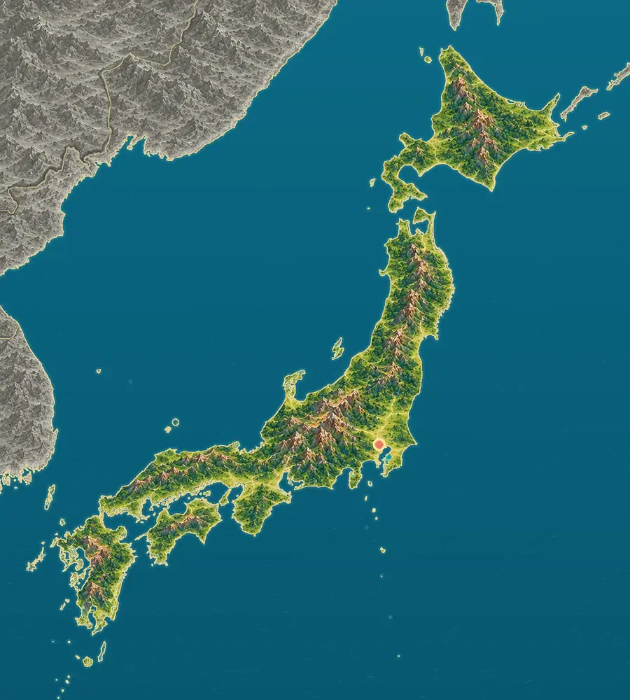
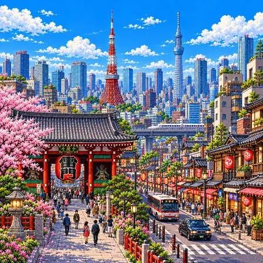
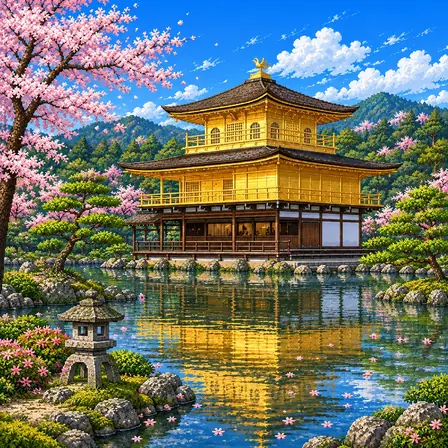
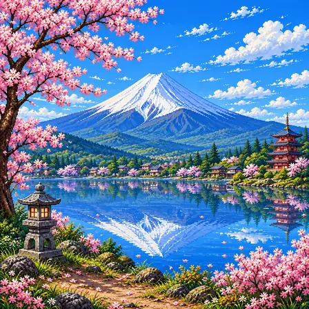
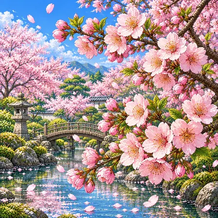
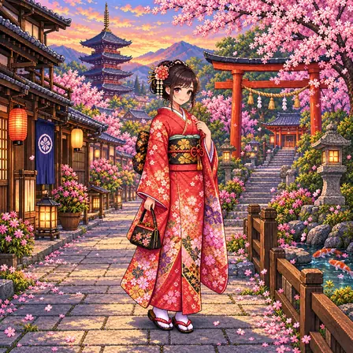
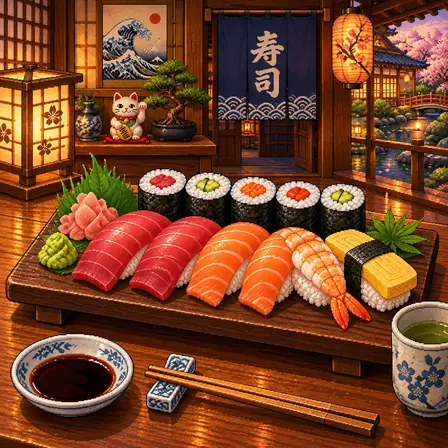
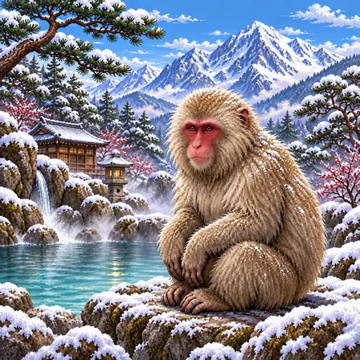
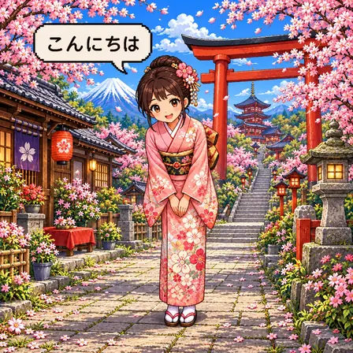

Mountains along the islands
Mountains run down the spine of the islands. Central Honshu has high ranges with peaks above 3,000 m, often called the Japanese Alps.
Source: Geospatial Information Authority of Japan, Typical landforms of Japan
World Geography Atlas › Asia › East Asia

日本
An island country · sushi and Mount Fuji.

Japan is made of four big islands and thousands of small ones. Mountains run down the middle of the islands, and there are many volcanoes. Mount Fuji, the highest, is a volcano too.
Japan is an island nation of Hokkaido, Honshu, Shikoku, Kyushu and many smaller islands. Lying where several plates meet, it is mountainous and volcanic, with plains confined to coasts and river mouths.
Mountains run down the spine of the islands. Central Honshu has high ranges with peaks above 3,000 m, often called the Japanese Alps.
Source: Geospatial Information Authority of Japan, Typical landforms of Japan
The Kanto Plain around Tokyo is Japan’s largest. Rivers from the mountains built this low land, and many people live there.
Source: Geospatial Information Authority of Japan, Typical landforms of Japan
Hokkaido, Honshu, Shikoku and Kyushu are separated by narrow straits and the calm Seto Inland Sea. Honshu is the largest.
Source: Geospatial Information Authority of Japan, Typical landforms of Japan · Natural Earth, Land, 1:50m
The Nansei Islands, including Okinawa, stretch south of Kyushu, and the Ogasawara Islands lie far out in the Pacific, south of Tokyo.
Source: Natural Earth, Land, 1:50m
Around Japan, ocean plates sink beneath continental plates. This movement lifts the land and causes frequent earthquakes and volcanic activity.
Source: Geological Survey of Japan, Geological structure of Japan
Mount Fuji, at 3,776 m, is Japan’s highest mountain. It is a cone-shaped stratovolcano built from layers of lava and ash. Hot springs heated from below are common near volcanoes.
Source: Japan Meteorological Agency, Fujisan · Geological Survey of Japan, Volcanoes and magma
A city, a heritage site, nature, a plant, culture, food, an animal, a greeting and the flag of Japan, each drawn as pixel art.

Tokyo is the capital of Japan. Together with the area around it, more than 37 million people live there. Old temples and towers stand among the tall buildings.
Tokyo is the capital of Japan and the heart of one of the world's largest urban areas, home to about 37 million people. It began as a small castle town called Edo, then grew quickly after the Tokugawa shogunate was set up there in 1603. The moats and canals around Edo Castle and the streets of the town below it became the backbone of today's city center, and in 1868 it was renamed Tokyo, meaning "eastern capital"; the emperor moved there the next year. It was badly damaged several times, including by the 1923 Great Kanto Earthquake, but it was rebuilt each time.

Kinkaku-ji is a temple that shines gold. Very thin gold sheets cover the walls of its second and third floors. It looks especially beautiful reflected in the pond.
Kinkaku-ji is a Zen temple in Kyoto. It was built as a villa in 1397 by Ashikaga Yoshimitsu, the third shogun of the Muromachi shogunate, and was turned into a Zen temple after he died. The whole outer wall of the upper two floors of its three-story pavilion is covered in pure gold leaf, and each floor is built in a different style. It was lost to a fire in 1950 and rebuilt in 1955. It is a UNESCO World Cultural Heritage site.

Mount Fuji is the tallest mountain in Japan. It is 3,776 m high, and its top is covered with snow. It is quiet now, but it is a volcano that could erupt again someday.
Mount Fuji is the tallest mountain in Japan, standing 3,776 m above sea level. It is a layered active volcano that began forming about 100,000 years ago, and the cone we see now was built on top of it by the 'New Fuji' volcano, which has been active since about 10,000 years ago. Its last eruption, in 1707, sent volcanic ash as far as Edo (today's Tokyo), about 100 km away. People have seen it as a sacred mountain since ancient times, and countless pilgrims have climbed it; it was listed as a UNESCO World Cultural Heritage site in 2013.

Cherry trees burst into pale pink blossoms all at once in spring. About two weeks later, the petals fall like snow. People gather under the trees to enjoy the flowers.
Cherry blossoms are the flower that stands for spring in Japan. The way they bloom fully for just a short time and then scatter captures a Japanese sense of beauty called mono no aware. Every March and April a flower-viewing custom called hanami spreads across the country, and people care so much that forecasts of when the blossoms will open appear on the news. Japan has hundreds of cultivated varieties of cherry trees.

The kimono is Japan's traditional outfit. It has no buttons; it is wrapped around the body and tied with a wide sash called an obi. People wear it on special days like coming-of-age ceremonies and summer festivals.
The kimono is Japan's traditional outfit, made by cutting a single bolt of cloth about 12 m long in straight lines. Instead of buttons, it is wrapped around the body and held in place with a wide sash called an obi. Its patterns and sleeve lengths can show the season, the occasion, and even the age of the person wearing it. Patterns like cherry blossoms or cranes carry wishes for happiness. Today people enjoy wearing it on special days such as coming-of-age ceremonies, graduations, shrine visits, and summer festivals.

Sushi is lightly sour rice topped with fish. Some sushi is rolled up in seaweed. You dip it lightly in soy sauce and eat it in one bite.
Sushi is a Japanese dish that places fresh fish or seafood on top of vinegar-seasoned rice. It began as a way of preserving fish by fermenting it with rice, then grew in 19th-century Edo (today's Tokyo) into a quick street food. There are many kinds, such as nigiri, where fish is laid on a hand-pressed mound of rice, and maki, rolled in seaweed. Tuna, salmon, shrimp, and rolled egg are popular toppings. It is dipped lightly in soy sauce and eaten with wasabi, and it has become the best-known Japanese food in the world today.

The Japanese macaque is a monkey with a red face and fluffy fur. It even lives in cold, snowy mountains. Some of them warm up in hot springs in winter.
The Japanese macaque is a monkey with a red face and thick brown fur, and it lives farther north than any primate except humans. It survives winter in Japan's snowy mountains - where snow can pile up more than 1 m - by eating bark, buds, and fruit. The macaques of the Jigokudani valley in Nagano are famous for soaking in hot springs on cold winter days. This hot-spring bathing is a learned behavior passed from mother to baby, and scholars find it fascinating. They live in troops of 20 to 100 and build friendships by grooming one another's fur.

Konnichiwa (こんにちは) is the Japanese greeting for the daytime. In the morning people say "ohayo," and in the evening "konbanwa." Japanese mixes three kinds of writing.
"Konnichiwa" is a Japanese greeting, read "kon-nee-chee-wa." It started as the first part of a sentence meaning "today, are you well?" and it is used during the daytime. The greeting changes with the time of day - "ohayo" in the morning and "konbanwa" in the evening. About 125 million people speak Japanese. Japanese is an unusual language that mixes three kinds of writing: the soft hiragana, the katakana used for borrowed words, and kanji characters.

Japan's flag has a red circle in the middle of a white background. The red circle stands for the sun. That is why it is called the Hinomaru, the "circle of the sun."
Japan's flag has a simple design: a single red circle in the very center of a white field. It is called the Hinomaru, which means "circle of the sun." The red circle stands for the sun, holding the old idea of Japan as "the land of the rising sun." In 1854 it was chosen as the mark for Japanese ships, and in 1870 it became the national flag flown by merchant ships. It was made the official national flag by law in 1999.